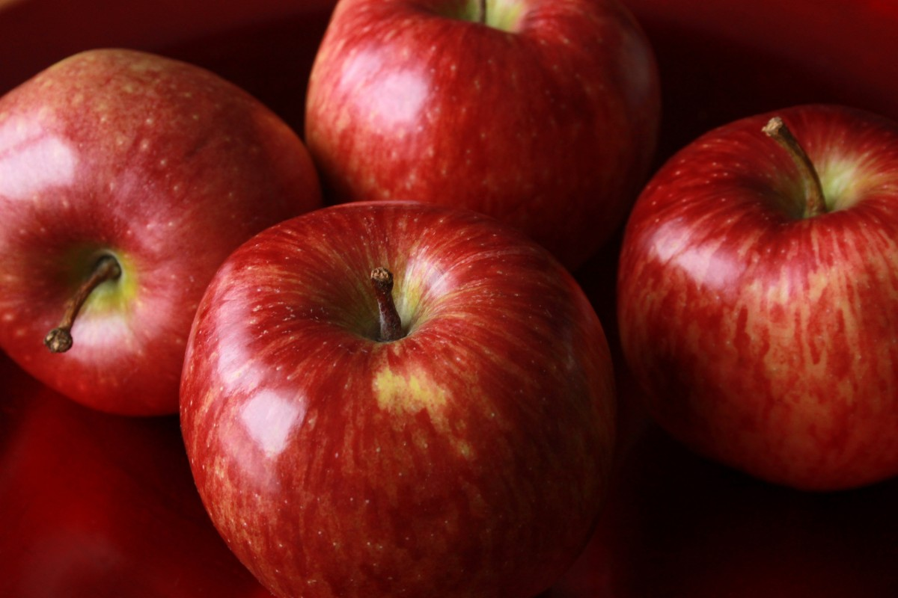

Сочный яблака!!!
 Яблака такой фкусный и свежый, аткусил-сразу темный стал!
Можна ишо ожымать сок.
Можна варит кампот или вино!
Витамин очэн многа! Асобинна любят дети.
Очэн сладкий, свежый! Стоит сафсэм дёшева! Скитка сделаем. Многа витамин.
Кило стоит 100 рублей, папробовать можна!